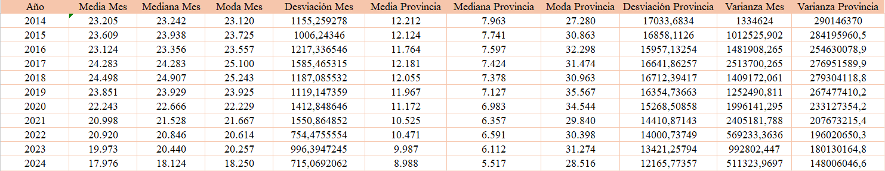
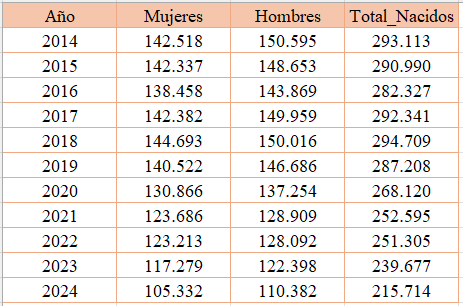
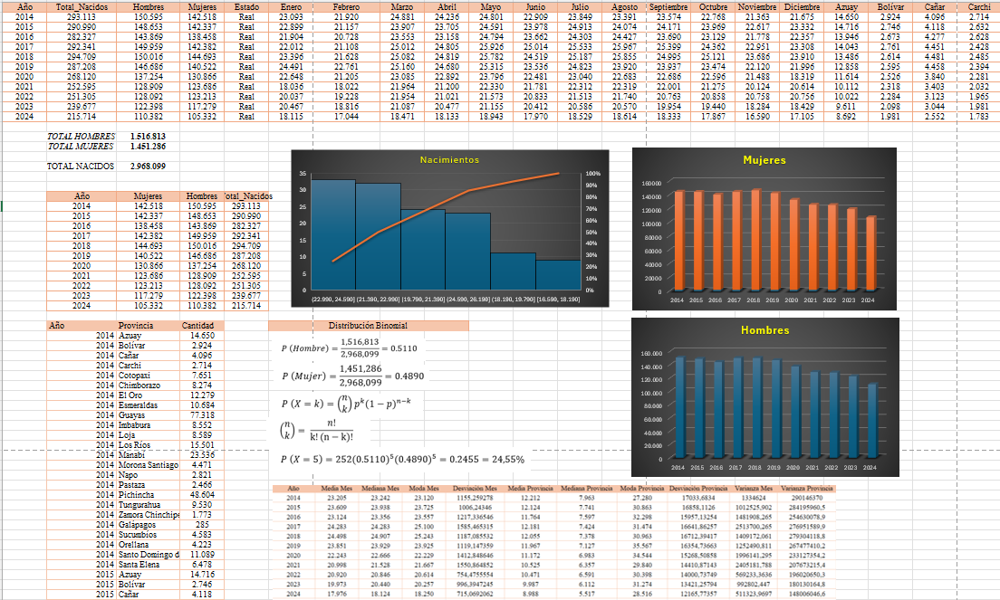

Fase 1: Recolección
Minería de Datos Oficiales
El primer paso fue acceder a las bases de datos del Instituto Nacional de Estadística y Censos (INEC). Recopilamos y depuramos registros de nacimientos vivos comprendidos entre 2014 y 2024, asegurando una fuente confiable y verificada.
Fuentes de Datos:
Fase 2: Procesamiento
Análisis y Limpieza
Utilizando hojas de cálculo, realizamos una depuración exhaustiva para eliminar datos irrelevantes. Identificamos las variables críticas para el estudio:
- Sexo y Edad
- Provincia de residencia
- Año de inscripción
Ejemplos de la depuración exhaustiva para eliminar datos irrelevantes
Hoja de cálculo con datos crudos
Datos para la tabla de contingencia
Hoja de cálculo con datos crudos
Tambien realizamos el diagrama de arbol, que tiene como base datos de la tabla de contingencia (ver en la fase 3).
Desglose de Probabilidad Condicional por Sexo
Fase 3: Modelado Estadístico
Matemáticas aplicadas a la Demografía
Aplicamos medidas de tendencia central y dispersión para identificar patrones de comportamiento. Esto nos permitió no solo entender el pasado, sino generar proyecciones estadísticas hacia el 2030.
Como ejemplo tenemos la tabla de contingencia
Tabla de Contingencia: Distribución conjunta de sexo y periodo (2014–2024)
| Sexo / Periodo | 2014-2018 | 2019-2024 | Total Parcial |
|---|---|---|---|
| Hombres | 710,388 | 740,898 | 1,451,286 |
| Mujeres | 743,092 | 773,721 | 1,516,813 |
| Total | 1,453,480 | 1,514,619 | 2,968,099 |
Fase 4: Visualización
Integración con Looker Studio
Los datos procesados alimentan nuestro Dashboard interactivo. Pasamos de gráficos estáticos a visualizaciones dinámicas que permiten filtrar 4.2 millones de registros en tiempo real.

Fase 5: Desarrollo Web
Arquitectura del Sitio
Implementamos el sitio utilizando estándares web modernos y control de versiones:
Estructura modular con carpetas separadas para estilos (Css) y recursos (img).